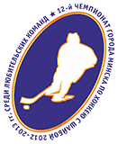

Чемпионат города Минска по хоккею с шайбой среди любительских команд – уникальный турнир для всех и для каждого. Возможность окунуться в атмосферу бескомпромиссной борьбы, командного духа, стремления к победе. Интересное зрелище для профессионального болельщика со стажем, и вполне подходящий вариант для первых визитов на хоккей.